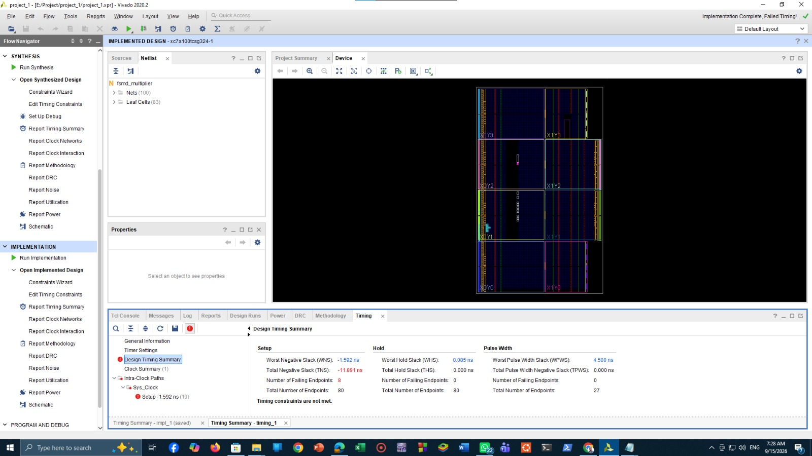
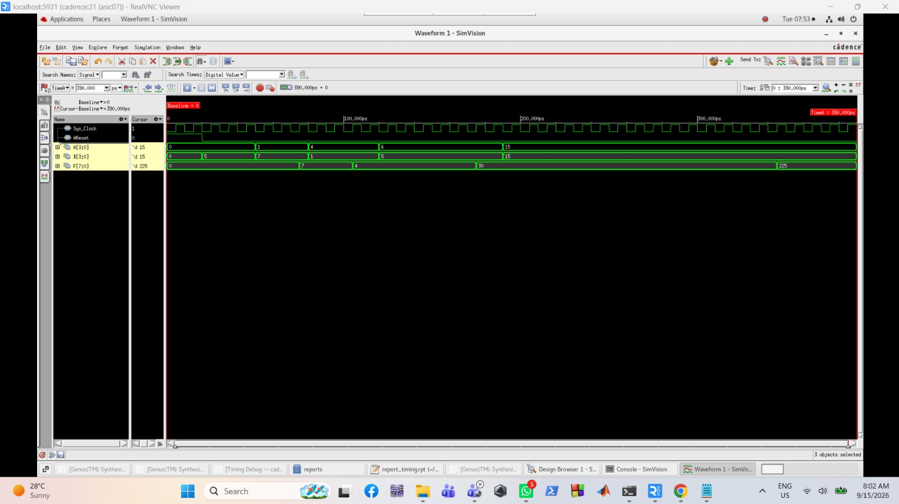
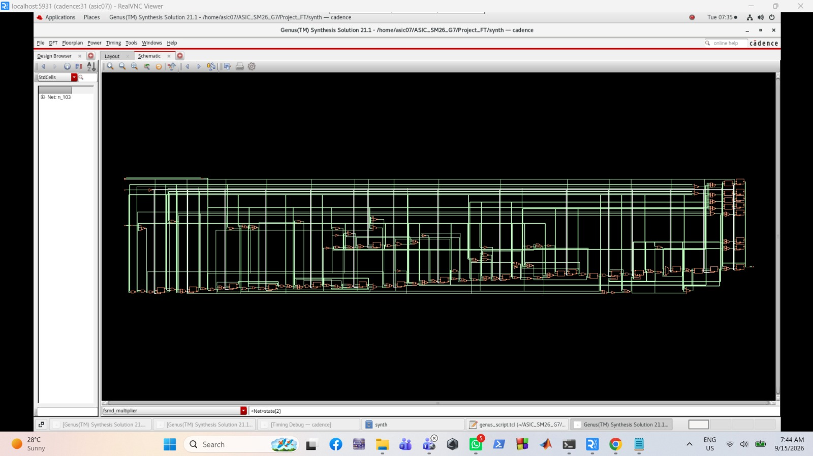
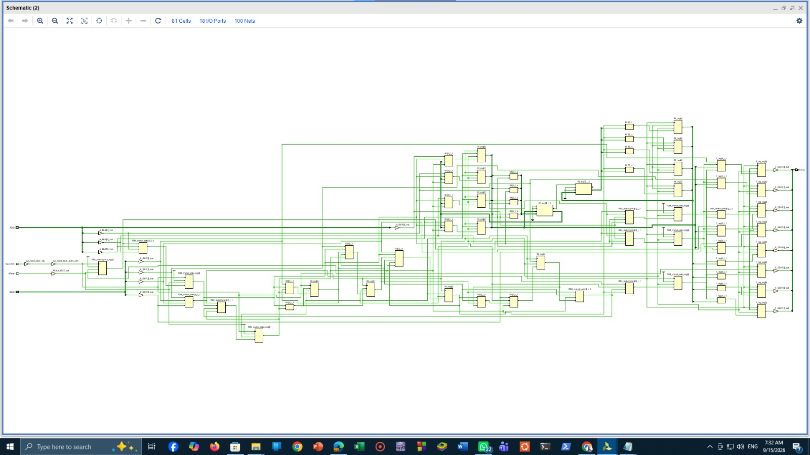
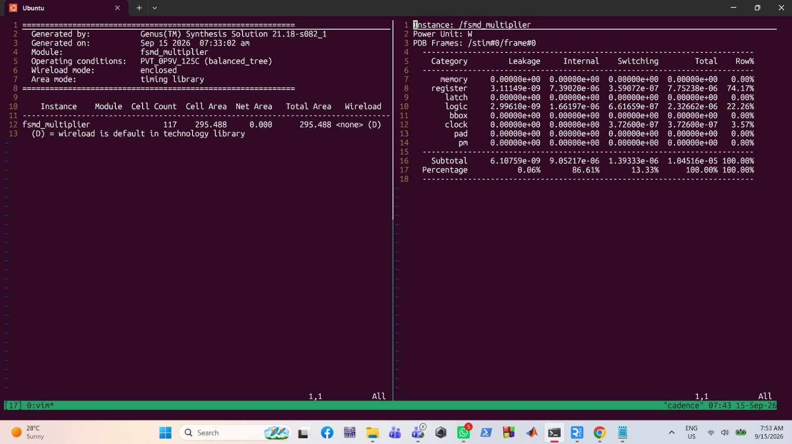
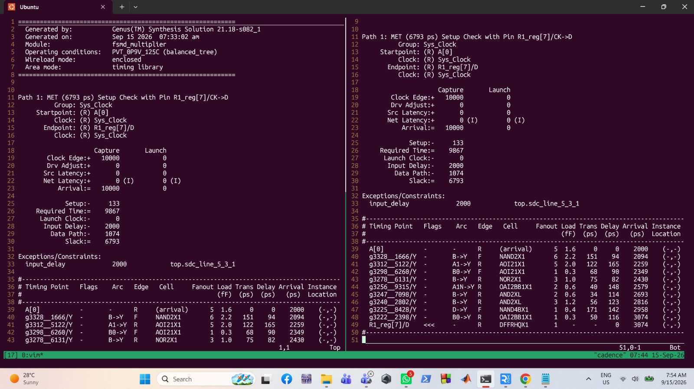
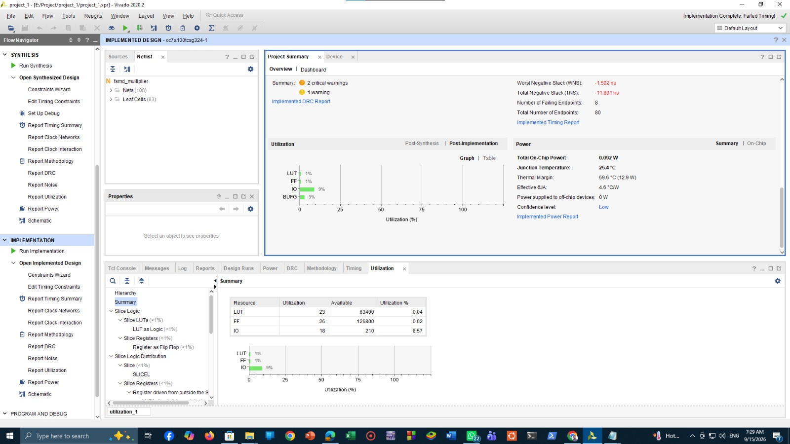
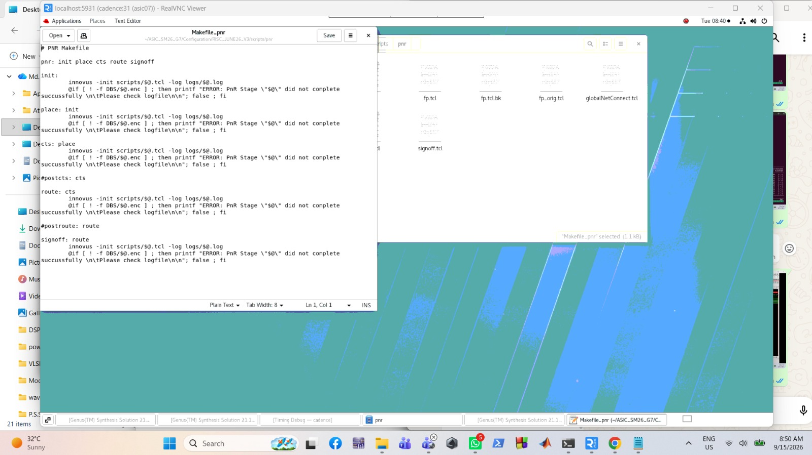

Design, Synthesis, and Comparative Analysis of a Custom FSMD Controller using ASIC and FPGA Technologies
A custom FSMD multiplier controller taken through Cadence ASIC synthesis and Vivado FPGA implementation, then compared on area, timing and power.








FPGA layout and timing summary in Vivado
Simulation waveform in Cadence SimVision
Gate-level schematic after Genus synthesis
Synthesized schematic in Vivado
ASIC area and power reports
ASIC setup timing report
FPGA utilization and power in Vivado
Innovus place and route scripts
About this project
This is my most recent project and it matches my interests in chip design perfectly. I designed a custom FSMD (finite state machine with datapath) controller, a multiplier that takes two 4-bit inputs and gives an 8-bit result. I checked it in simulation first: the SimVision waveform shows the output reaching 225 when both inputs are 15.
Then I took the same design through two different technologies. For the ASIC side, I synthesized it with Cadence Genus. The report shows 117 cells, a cell area of 295.488, and the setup timing was met with 6793 ps of slack on a 10 ns clock. The total power was about 10.45 uW, mostly from the registers (74%) and the logic (22%). I also worked with the Innovus place and route scripts (init, place, CTS, route and signoff).
For the FPGA side, I used Vivado 2020.2 on an Artix-7 part (xc7a100tcsg324-1). Synthesis finished with no errors or warnings, and the design is very small: 23 LUTs, 26 flip-flops and 18 IOs after implementation. Timing was met after synthesis, but after implementation the worst negative slack was -1.592 ns with 8 failing endpoints out of 80. The total on-chip power was 0.092 W, and almost all of it (99%) is the static power of the device.
Putting the two sets of reports side by side helped me understand how the same RTL design behaves in an ASIC flow and in an FPGA flow, and how to read area, timing and power reports in both.
What it does
- Custom FSMD controller with a 4-bit x 4-bit multiplier datapath
- Functional simulation in Cadence SimVision (15 x 15 = 225)
- ASIC synthesis in Cadence Genus: 117 cells, setup slack of 6793 ps met
- ASIC power report: about 10.45 uW in total
- Place and route flow scripts for Cadence Innovus
- FPGA synthesis and implementation in Vivado 2020.2 for Artix-7
- FPGA result: 23 LUTs, 26 flip-flops, 0.092 W, timing not met after implementation
- Side-by-side comparison of area, timing and power for ASIC and FPGA